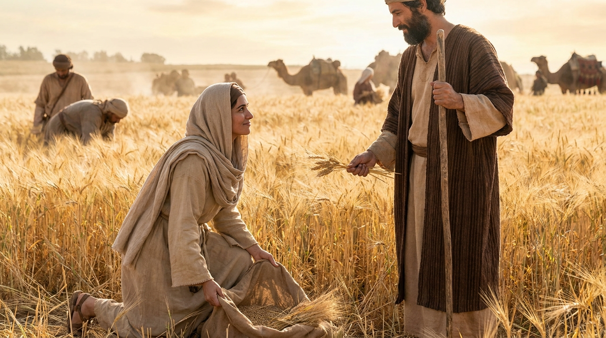

Uma História de Redenção e Lealdade
O livro de Rute é uma bela e curta narrativa ambientada no tempo dos juízes. Ele se destaca por mostrar o amor leal, a fidelidade de uma jovem moabita à sua sogra Noemi e a providência divina agindo no dia a dia através de Boaz, o resgatador.
Ficha Técnica
- Autor: Desconhecido (a tradição judaica atribui a Samuel)
- Tema Principal: Lealdade, redenção, providência divina e a linhagem do Messias.
- Versículo-Chave: "Respondeu Rute: 'Não me instes para que te abandone e deixe de seguir-te. Porque aonde quer que tu fores, irei eu; e onde quer que pousares, ali pousarei eu; o teu povo será o meu povo, o teu Deus será o meu Deus.'" (Rute 1:16)
Estrutura
- Tragédia familiar e o retorno a Belém (Cap. 1)
- Rute colhe espigas no campo de Boaz (Cap. 2)
- O encontro na eira (Cap. 3)
- Boaz atua como resgatador e a genealogia de Davi (Cap. 4)